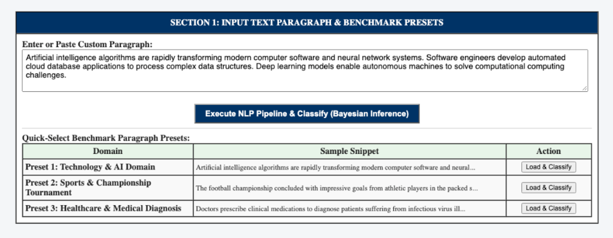
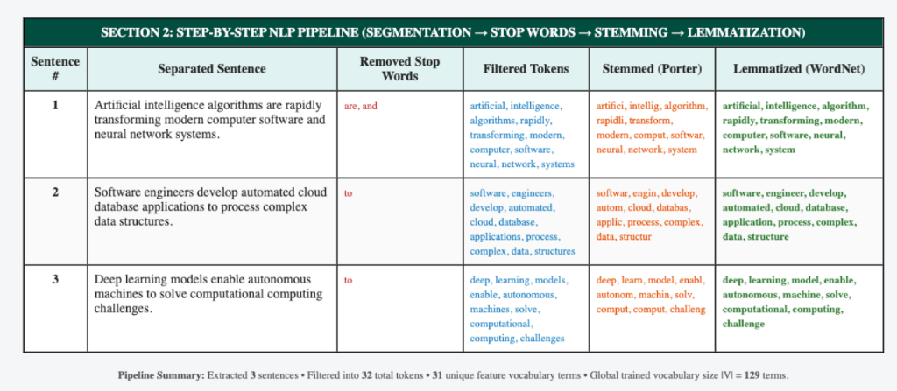
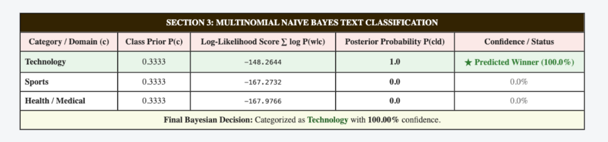
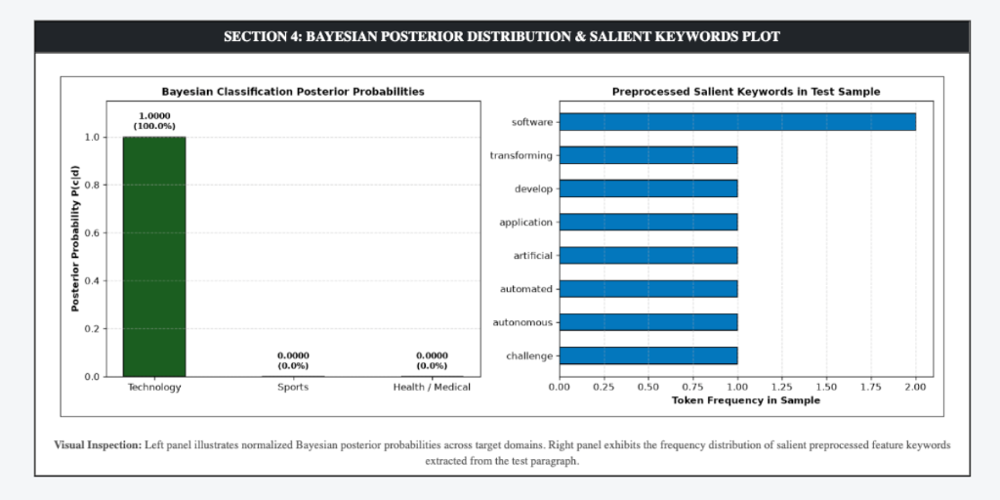

Practical File Submission — Academic Session
Text Paragraph Segmentation, Stop Words Removal, Stemming, Lemmatization, and Bayesian Classification Using Flask
To prepare an interactive web application using Flask in Python to extract a text paragraph, separate it into individual sentences, filter out English stop words, apply stemming and lemmatization, and classify the processed text into domain categories using a Multinomial Naive Bayes classifier.
Sentence segmentation separates continuous text into distinct grammatical sentences. Word tokenization further isolates individual lexical tokens while removing punctuation marks.
Stop words represent ubiquitous syntactic connectors (e.g., the, is, in, at, which, for) that lack domain discriminating information. Filtering reduces noise and computational complexity:
Configured exp 5/ directory and validated NLTK packages (punkt, punkt_tab, stopwords, wordnet).
Parsed paragraph using sent_tokenize() and word_tokenize() to establish lexical boundary units.
Applied stop word exclusion, Porter Stemmer, and WordNet Lemmatizer across all extracted tokens.
Launched interactive Flask web server on http://127.0.0.1:5007 for real-time text analysis and Bayesian inference.
Web interface accepting custom text paragraphs and benchmark testing presets.

Complete transformation breakdown showing original sentences, filtered stop words, stemmed tokens, and lemmatized lemmas.

Calculated prior probabilities, log-likelihood sums, normalized posteriors, and MAP winner identification.

Visualizing posterior probabilities alongside top informative keywords extracted from the test paragraph.

GitHub Repository (Clickable):
Direct Source Code Files:
In this experiment, an end-to-end natural language processing and text categorization pipeline was successfully implemented using Flask and NLTK in Python. The workflow demonstrated sentence boundary segmentation, token cleaning, stop words removal, Porter stemming, and WordNet lemmatization. Finally, a Multinomial Naive Bayes classifier with Laplace smoothing accurately predicted the topical domain of test paragraphs based on word likelihoods and prior probabilities, displaying the entire transformation and probability distribution on an interactive web page.